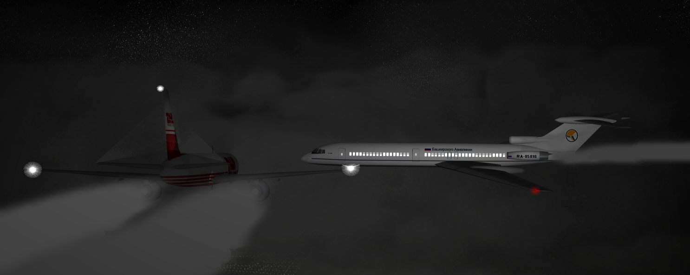

Why · Überlingen, Germany · July 1, 2002
71 lives lost. One controller, working alone.
Conflict alert off
Phone line down
One person, two workstations
Reconstruction: Anynobody, CC BY-SA 4.0, Wikimedia Commons · Source: FAA Lessons Learned, RA-85816